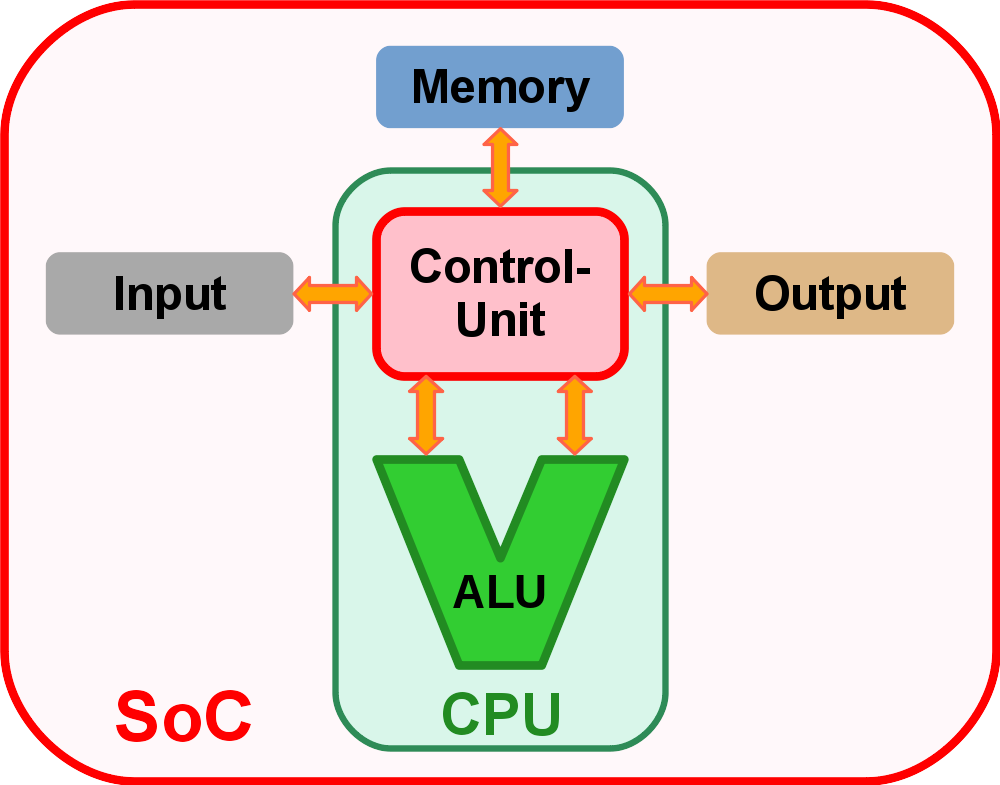
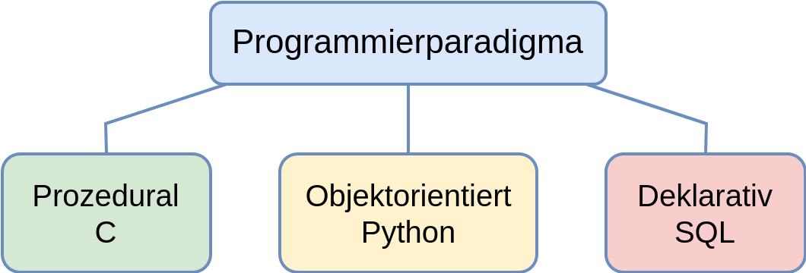
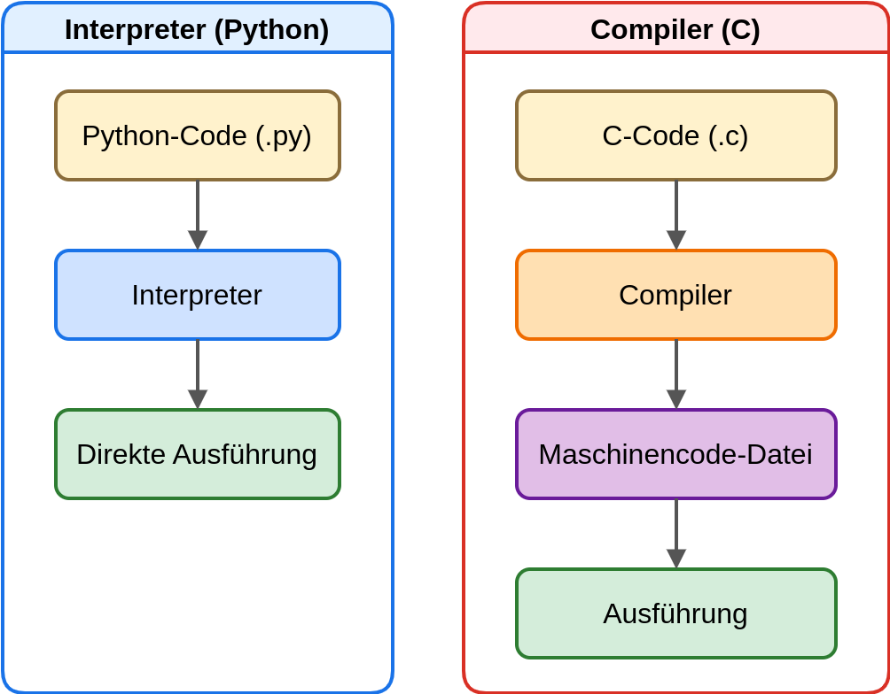

Einführung in die Informatik mit C und Python
Vom Abakus zum Computer
Vom Abakus bis zum Hochleistungsrechner – die Entwicklung des Computers begann mit dem Wunsch, komplexe
Berechnungen schneller, präziser und automatisiert durchführen zu können
Heute sind Computer aus unserem Alltag nicht mehr wegzudenken: Sie verarbeiten Daten, steuern Geräte und
ermöglichen die Entwicklung moderner Software.
Ein einfaches, aber anschauliches Beispiel ist die folgende Aufgabe:
Berechnen Sie die Quadratwurzel von 2 auf drei Nachkommastellen
ohne Taschenrechner, nur mit Papier und Stift!
Zunächst ist klar:
Der Wert muss zwischen 1 und 2 liegen muss, da 12 = 1 und
22 = 4 ist.
Ein erster Versuch mit 1,5 ergibt 1,52 = 2,25 – der Wert ist zu groß.
Eine Korrektur auf 1,4 führt zu 1,42 = 1,96 – näher am Ziel, aber immer noch
nicht exakt.
Es folgt ein Hin- und Herprobieren mit immer kleineren Schritten, bis endlich die geforderten drei Nachkommastellen erreicht sind.
Nach einigen Minuten (oder einer halben Ewigkeit, je nach Geduld) stellt sich unweigerlich der Gedanke ein:
„Das könnte doch eigentlich auch jemand anderes für mich machen – zum Beispiel eine Maschine.“
Genau hier setzt die Geschichte des Computers an: eine präzise, schnelle und unermüdliche Rechenhilfe, die solche Aufgaben in Millisekunden löst.
In diesem Kapitel werden die Grundlagen der Informatik vermittelt – beginnend bei den zentralen Komponenten eines Computers (Eingabe, Ausgabe, Speicher, Steuerwerk und Rechenwerk) bis hin zu den Unterschieden zwischen prozeduraler Programmierung in C und objektorientierter Programmierung in Python.
Zudem wird erläutert, wie Programme aus für Menschen verständlichen Anweisungen in Maschinensprache übersetzt werden und welche Funktionen Compiler, Interpreter sowie hybride Ansätze in diesem Prozess übernehmen.
Die Komponenten eines Computers
Ein Computer besteht aus mehreren wichtigen Bausteinen. Jeder dieser Bausteine übernimmt eine bestimmte Aufgabe, damit der Computer als Ganzes funktioniert.
Die fünf wichtigsten Komponenten eines Computers sind:
-
Eingabe (
Input):
Daten kommen in den Computer, z. B. über Tastatur, Maus oder Mikrofon. -
Ausgabe (
Output):
Ergebnisse verlassen den Computer, z. B. über Bildschirm, Drucker oder Lautsprecher. -
Speicher (
Memory):
Daten und Programme werden vorübergehend oder dauerhaft gespeichert. -
Steuerwerk (
Control Unit):
Es sagt den anderen Komponenten, was sie wann tun sollen – wie ein Dirigent im Orchester. -
Rechenwerk (
Arithmetic Logic Unit, ALU):
Hier wird gerechnet, verglichen und logisch kombiniert – die „Matheabteilung“ des Computers.

Moderne Computer besitzen noch viele weitere Komponenten, wie z. B.
-
Grafikprozessoren (
GPU) für Spiele und Bildverarbeitung - Netzwerkkarten für Internetzugang
- Sensoren, Kameras oder Touchscreens - vor allem in mobilen Geräten
Aber die oben genannten fünf Grundkomponenten sind das Fundament jedes Computersystems.
Technische Umsetzung der Grundfunktionen eines Computers
Wie diese fünf Grundfunktionen - Eingabe, Ausgabe, Speicher, Steuerwerk und Rechenwerk - in der Praxis
realisiert werden, hängt von der jeweiligen Bauweise des Computers ab.
Man spricht hierbei von unterschiedlichen Computerarchitekturen.
Beispiele für Computerarchitekturen
Von-Neumann-Architektur:
Die klassische Architektur, wie sie in fast allen PCs verwendet wird. Speicher und Daten teilen sich
denselben Bus.
Harvard-Architektur:
Hier sind Programm und Daten getrennt gespeichert. Z. B. in vielen Mikrocontrollern.
RISC-Architektur (Reduced Instruction Set Computer):
Weniger, dafür schnellere Befehle.
Verwendet z. B. in modernen Smartphones (ARM-Prozessoren).
CISC-Architektur (Complex Instruction Set Computer):
Viele komplexe Befehle
Verwendet z.B. in klassischen Intel- oder AMD-Prozessoren.
Parallelrechner / GPU-Architektur:
Speziell zum gleichzeitigen Verarbeiten vieler Daten, z. B. für Spielegrafik, KI oder wissenschaftliches
Rechnen.
Programmierung eines Computers
Ein Computer verarbeitet Informationen in binärer Form, also in einer Abfolge von Nullen und Einsen - der sogenannten Maschinensprache.
Um Programme effizient zu entwickeln und verständlich zu formulieren, wurden im Laufe der Zeit verschiedene Programmiersprachen (Abstraktionsebenen der Programmierung) eingeführt. Diese ermöglichen es, komplexe Anweisungen in einer für den Menschen lesbaren Form zu schreiben und anschließend in maschinenlesbare Befehle zu übersetzen.
Low Level – Nah an der Hardware
Diese Sprachen arbeiten direkt mit dem Prozessor. Sie sind schwer zu lesen, dafür sehr schnell und effizient. Um sie korrekt anwenden zu können, ist ein detailiertes Wissen über die Hardware notwendig.
Maschinensprache:
Direkt in Binärform – z. B.: 10111001 00100000
(Nur für Maschinen verständlich)
Assembler:
Lesbare Kurzbefehle wie: MOV AX, 01 oder ADD BX, AX
(Für Menschen lesbar, aber trotzdem sehr nah an der Maschine)
Verwendung:
Firmware, Mikrocontroller, Zeitkritische Systeme.
High Level – Für Menschen gedacht
Diese Sprachen sind deutlich abstrakter. Sie nutzen Wörter, Schleifen, Bedingungen – und sind leichter zu schreiben und zu verstehen. Sie erfordern nicht unbedingt Kenntnis über die Hardware. Vielmehr sind sie dazu da, um Computerprogramme unabhängig von der Hardware zu machen.
Verwendung:
Softwareentwicklung, Webanwendungen, Spiele, Datenanalyse, KI
Wozu unterschiedliche Programmiersprachen?
Unterschiedliche Programmiersprachen sind häufig auf spezifische Anforderungen hin optimiert. Dabei stehen je nach Sprache unterschiedliche Gesichtspunkte im Vordergrund, wie etwa:
- die Nähe zur Hardware (z. B. C oder Assembler für Embedded-Systeme)
- die Lesbarkeit und Verständlichkeit für den Menschen (z. B. Python für Einsteiger und Datenanalysen)
- die Leistungsfähigkeit in bestimmten Anwendungsbereichen (z. B. Java für plattformunabhängige Anwendungen oder R für Statistik)
- die Effizienz in der Parallelverarbeitung (z. B. CUDA für GPU-Programmierung)
Trotz der Vielzahl moderner Programmiersprachen und deren unterschiedlichen Abstraktionsebenen ist es didaktisch und praktisch sinnvoll, die fünf Grundfunktionen eines Computers – Eingabe, Ausgabe, Speicher, Steuerwerk und Rechenwerk – stets im Hintergrund mit zu berücksichtigen. Ein fundiertes Verständnis dieser grundlegenden Komponenten unterstützt dabei, sinnvollen, strukturierten und ressourcenschonenden Code zu schreiben.
Beispiele
- Wer weiß, dass Daten aus der Festplatte (Speicher) viel langsamer verarbeitet werden als Daten im RAM, wird beim Programmieren gezielt mit Zwischenspeichern (Caching) arbeiten.
- In der Mikrocontroller-Programmierung (z. B. mit C oder Assembler) ist das Wissen über Steuer- und Rechenwerk entscheidend, um zeitkritische Abläufe korrekt umzusetzen.
- In der Datenverarbeitung mit Python hilft das Verständnis von Ein- und Ausgabeoperationen, um Dateizugriffe effizient zu gestalten, z. B. durch Pufferung und asynchrones Lesen.
- Bei der Entwicklung grafischer Benutzeroberflächen (GUI) muss man beachten, dass zwischen Eingabeereignissen (z. B. Mausklick) und der Ausgabe auf dem Bildschirm zahlreiche Komponenten und Prozesse beteiligt sind – die man gezielt programmieren oder ansprechen muss.
Fazit
Unabhängig von der verwendeten Sprache oder dem Einsatzbereich fördert das Wissen über die interne Arbeitsweise des Computers ein besseres und effizientes Programmierverhalten – von der einfachen Schleife bis zur komplexen Systemsoftware.
Programmierparadigmen
Programmiersprachen lassen sich nach Programmierparadigmen unterscheiden.
Ein Programmierparadigma beschreibt einen grundsätzlichen Ansatz, wie Programme konzipiert,
strukturiert
und umgesetzt werden.
Es legt fest:
- Welche Grundkonzepte in der Sprache im Vordergrund stehen (z. B. Funktionen, Objekte, Regeln, Ausdrücke)
- Wie Programmabläufe beschrieben werden (z. B. Schritt-für-Schritt, deklarativ)
- Welche Denkweise bei der Problemlösung angewendet wird
Kategorien für Programmierparadigmen sind: prozedural, objektorientiert, deklarativ.

Prozedurale Programmierung (C)
Zentrale Idee:
Ein prozedurales Programm wird als Abfolge von Anweisungen ausgeführt – Schritt für Schritt.
Um wiederkehrende Aufgaben nicht jedes Mal neu zu schreiben, fasst man sie in Funktionen zusammen.
- Eine Funktion ist ein kleiner, eigenständiger Programmblock, der eine bestimmte Aufgabe erledigt.
- Funktionen können mehrfach und von beliebiger Stelle im Programm aufgerufen werden.
Jedes Programm hat in der Regel ein Hauptprogramm – in C ist das die Funktion
main().
Das Hauptprogramm wird automatisch als Erstes beim Start des Programms ausgeführt.
Von hier aus werden weitere Funktionen aufgerufen.
Beispiel:
Programmcode in der Programmiersprache C.
#include <stdio.h> // Funktion zur Begrüßung void begruessung() { printf("Hallo, willkommen im Programm!\n"); } int main() { begruessung(); // Funktionsaufruf printf("Programm läuft...\n"); return 0; // Ende des Programms }
Programmablauf des Beispiels:
-
Programm startet →
main()wird automatisch aufgerufen. -
main()ruftbegruessung()auf. - Begrüßungstext wird ausgegeben.
- Das Hauptprogramm läuft weiter.
objektorientierte Programmierung (Python)
Zentrale Idee:
Ein objektorientiertes Programm besteht aus Objekten, die Daten (Attribute) und Funktionen (Methoden) zusammenfassen.
Objekte werden (in Python) aus Klassen erzeugt (Klasse = Bauplan, Objekt = gebautes Exemplar).
Methoden sind Funktionen, die innerhalb einer Klasse definiert sind.
Grundlegende Konzepte der Objektorientierung
Kapselung (Encapsulation):
- Attribute (Daten) und die zugehörigen Methoden (Funktionen) werden in einer Klasse zu einer Einheit zusammengefasst.
- Der direkte Zugriff auf Attribute von außen wird eingeschränkt (information hiding).
-
Änderungen an den Attributen erfolgen ausschließlich über die in der Klasse definierten öffentlichen Methoden (
public methods), die als Schnittstelle (Interface) dienen.
Vererbung (Inheritance):
-
Eine abgeleitete Klasse (
subclass) kann Eigenschaften und Methoden einer Basisklasse (superclass) übernehmen. - Die abgeleitete Klasse kann diese geerbten Elemente unverändert nutzen, überschreiben oder erweitern.
- Vererbung dient der Wiederverwendbarkeit von Code und ermöglicht die Bildung von Klassenhierarchien.
Beispiel:
Programmcode in der Programmiersprache Python.
class Person:
def __init__(self, name):
self.name = name # Attribut speichern
def vorstellen(self):
print(f"Hallo, ich heiße {self.name}.")
# Hauptprogramm
if __name__ == "__main__":
p1 = Person("Anna") # Objekt erzeugen
p1.vorstellen() # Methode aufrufen
Programmablauf des Beispiels:
-
Die Klasse
Personwird definiert. -
Ein Objekt
p1wird erzeugt. -
Die Methode
vorstellen()wird aufgerufen und gibt den Namen aus.
Vergleich Prozedural vs. Objektorientiert
|
Merkmal |
Prozedural (C) |
Objektorientiert (Python) |
|
Fokus |
Funktionen |
Objekte |
|
Daten |
Separat von Funktionen |
In Objekten gespeichert |
|
Strukturierung |
Ablaufsteuerung |
Modellierung von Dingen |
|
Wiederverwendbarkeit |
Durch Funktionsaufrufe |
Durch Klassen & Vererbung |
|
Anwendung |
Hardwarenahe Programmierung, Treiber, Betriebssysteme, Mikrocontroller |
Größere bis große Softwareprojekte bei denen ganze Teams an der Softwareentwicklung arbeiten, Anwendungssoftware |
Konvertierung von Programmiersprachen in ausführbaren Code
Ein Computer kann Informationen ausschließlich in Maschinensprache verarbeiten – also in einer Folge von binären Zuständen (0 und 1).
Programmiersprachen wie Python, C oder Java sind sogenannte Hochsprachen.
Damit der Prozessor diese Anweisungen ausführen kann, müssen der Quellcode bzw. das Skript zunächst in
Maschinensprache übersetzt werden.
Für diese Übersetzung existieren im Wesentlichen zwei grundlegende Ansätze:
Compiler-Ansatz
Der gesamte Quellcode wird vor der Ausführung in Maschinensprache umgewandelt (compiliert).
Die
Software, die dazu verwendet wird nennt man Compiler.
Das Ergebnis ist eine ausführbare Datei, die direkt vom Prozessor gestartet werden kann.
Beispiel:
Erstellung einer .exe Datei unter Windows oder einer ausführbaren Binärdatei unter Linux aus einem
Quelltext in C.
Vorteil: Sehr schnelle Ausführung des Programms, da keine Übersetzung während der Laufzeit nötig ist. Der erzeugte Maschienencode kann beim Compilieren optimiert werden.
Nachteil: Änderungen im Quellcode erfordern einen erneuten Compiliervorgang.
Interpreter-Ansatz
Der Quellcode wird Schritt für Schritt während der Programmausführung in Maschinensprache übersetzt
(interpretiert) und sofort ausgeführt.
Die Software, die dazu verwendet wird nennt man Interpreter.
Beispiel:
Ausführung eines Python Skripts durch den Python-Interpreter.
Vorteil: Sofortiges Testen und schnelle Entwicklung möglich.
Nachteil: Langsamer als ein compiliertes Programm, da Übersetzung und Ausführung gleichzeitig erfolgen.

Hybrid-Ansätze
Einige Sprachen nutzen eine Kombination aus beiden Verfahren.
Der Quellcode wird zunächst in eine Zwischensprache (z. B. Bytecode) kompiliert.
Dieser Bytecode wird anschließend von einer virtuellen Maschine interpretiert oder zusätzlich optimiert.
Beispiel:
Java – Quellcode → Bytecode (.class-Dateien) → Ausführung in der Java Virtual Machine